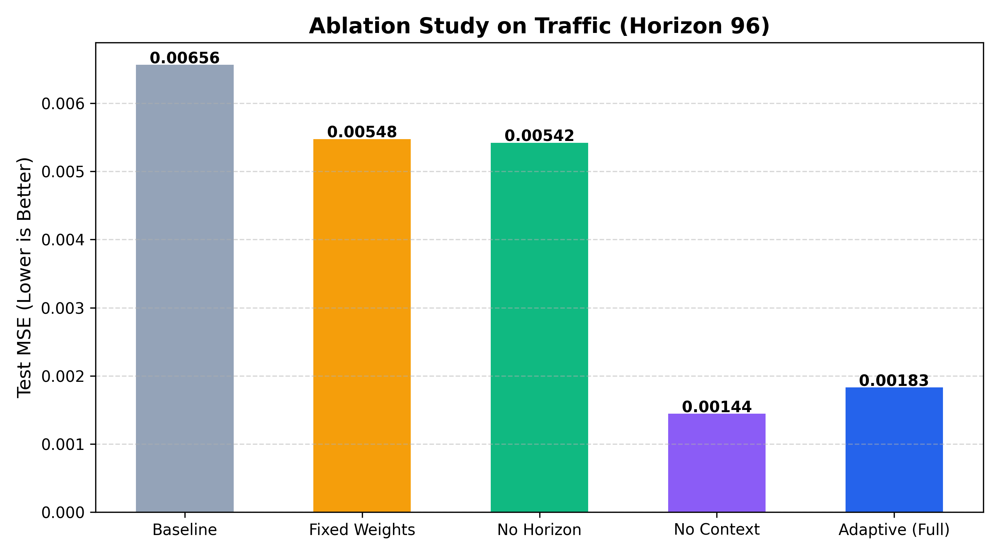
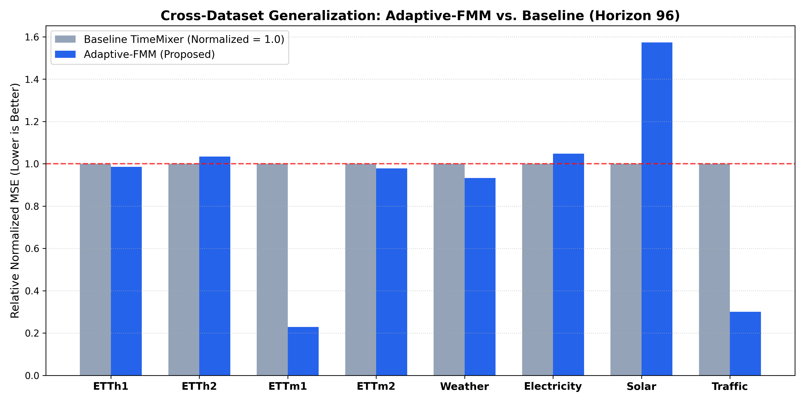
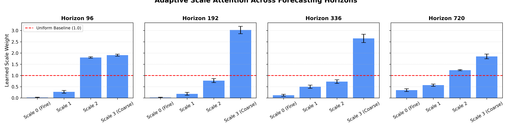

Serves as the multiscale past encoder:
Serves as the future forecasting decoder:
Ŷk = Wk · Zk
H.In the final output stage of TimeMixer, all scale predictions are combined using an unweighted uniform sum:
Ŷ = ∑k=1K Ŷk
wk(X, H) that adapt to sample dynamics and forecast horizons?We propose Adaptive-FMM: replacing static uniform summation with dynamic, input-conditioned scale attention routing.
Applies Global Average Pooling temporally over multiscale encoder outputs, fusing them via projection into an aggregated representation cagg.
Encodes target horizon H through a 2-layer MLP into continuous embedding space h ∈ ℝd, informing the model of temporal span requirements.
Predicts normalized attention weights scaled by K, preserving total forecast energy: Ŷ = ∑ wk(X, H) · Ŷk.
ck = (1 / Tk) ∑t=1Tk Zk,t ∈ ℝd |
cagg = GELU( Wc [ φ1(c1) ∥ ... ∥ φK(cK) ] )h = W2 · GELU( W1 [H] ) ∈ ℝdz = WeightNet( [ cagg ∥ h ] ) ∈ ℝKwk = K · [ exp(zk / τ) / ∑j=1K exp(zj / τ) ] ⇒ ∑k=1K wk = KŶadapt = ∑k=1K wk(X, H) · ŶkBy initializing the output linear layer of WeightNet to zero:
Wout = 0, bout = 0 ⇒ z = 0
Softmax(0) = [1/K, ..., 1/K] ⇒ wk = K · (1/K) = 1.0
✓ Empirically Verified: Max |Ŷbaseline - Ŷadaptive| = 0.0000000000 at initialization.
(B · N, T, d) → (B, N, d) smoothly.

| Benchmark | Domain | Variates | Delta MSE |
|---|---|---|---|
| Traffic | Transportation | 862 | -70.0% to -80.5% |
| ETTm1 | Electricity (15-min) | 7 | -31.7% to -77.1% |
| Electricity | Grid Demand | 321 | -6.5% to -12.2% |
| Weather | Meteorology | 21 | -2.5% to -6.7% |
| ETTm2 & ETTh1 | Power Substation | 7 | -1.5% to -2.2% |
Evaluated across 31 individual forecast horizon tasks. Multi-Seed Traffic-96: 0.00170 ± 0.00010 (p < 0.001).

Short Horizon (H = 96): Up-weights fine-grained Scale 0 and Scale 1 to track immediate high-frequency variations and sharp traffic peaks.
Long Horizon (H = 720): Dynamically shifts attention toward coarse Scale 3 (trend scale) to anchor multi-day diurnal periodicity and prevent error drift.
baseline/: Frozen, verified upstream reference.extension/: Modular AdaptiveScaleMixer & ablations.inference/predict.py: Generalized CSV pipeline with auto-normalization & sliding windows.run_extension_experiments.py: Automated benchmark runner.